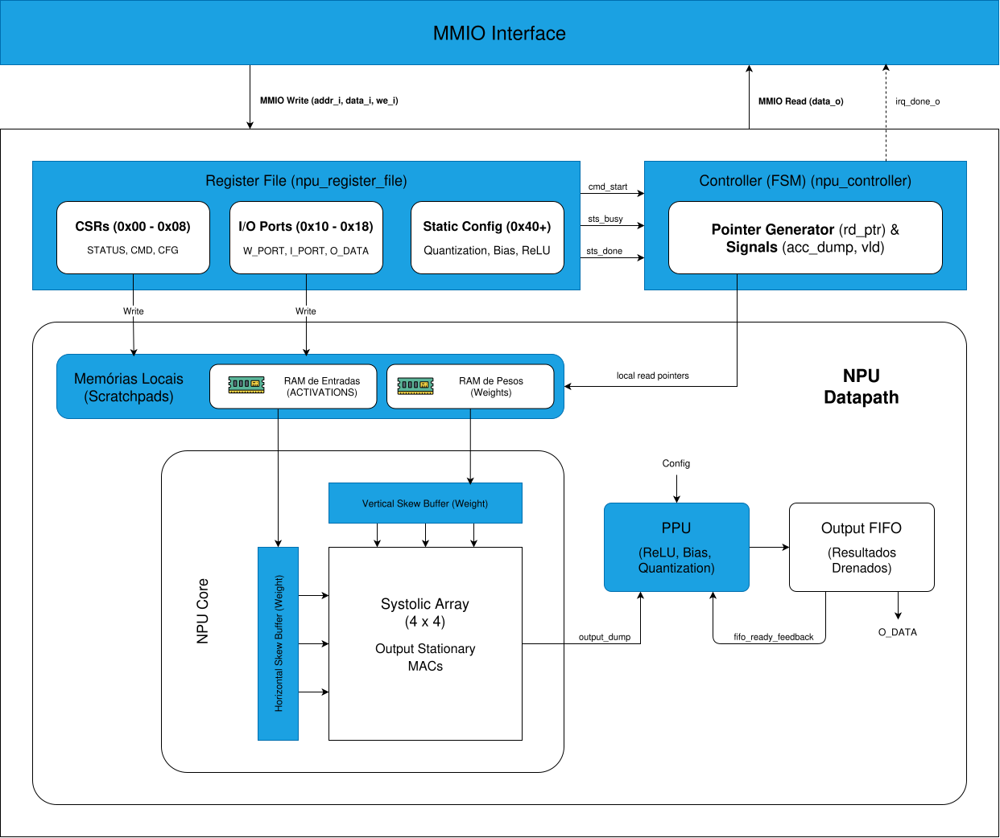

Arquitetura e Design
Do ponto de vista de projeto de hardware, o desenvolvimento de um coprocessador - incluindo uma NPU - envolve decisões arquiteturais como o modelo de comunicação com a CPU, o grau de compartilhamento de memória, os mecanismos de sincronização e a definição do conjunto de operações suportadas. Esses aspectos posicionam o coprocessamento como um tema central na arquitetura de computadores moderna, conectando conceitos clássicos de organização de sistemas com tendências atuais de aceleração de domínio específico.
A arquitetura top-level da nossa NPU foi projetada de forma modular, separando claramente as responsabilidades de comunicação, controle, armazenamento local e processamento intensivo. O diagrama abaixo ilustra os principais blocos funcionais e o fluxo de sinais e dados entre eles.

1. Interface de Comunicação e Registradores (MMIO)
A comunicação entre o processador hospedeiro (CPU) e a NPU é realizada através de Memory-Mapped I/O (MMIO). O barramento recebe sinais padrão de escrita (addr_i, data_i, we_i) e leitura (data_o), permitindo que a CPU configure os parâmetros da rede neural, carregue os dados de entrada e leia os resultados finais.
Além do fluxo de dados, a interface gerencia as interrupções de hardware (sinal irq_done_o), notificando a CPU de forma assíncrona quando um lote de inferências é concluído, liberando o processador principal para outras tarefas enquanto a NPU trabalha.
2. Unidade de Controle (FSM)
O "cérebro" da NPU é a sua Unidade de Controle, implementada como uma Máquina de Estados Finita (FSM - Finite State Machine). Ela é ativada pelo sinal cmd_start (escrito pela CPU via MMIO) e é responsável por orquestrar todo o pipeline de execução. A FSM gerencia os ponteiros de leitura locais (local read pointers), garantindo que os dados corretos sejam injetados no arranjo sistólico no momento exato. Durante a operação, ela sinaliza seu estado através de sts_busy e, ao finalizar, emite o sts_done.
3. Gestão de Memória Local (Scratchpads)
Para evitar o Memory Wall (comentado posteriormente) e não sobrecarregar o barramento principal do sistema, a NPU possui memórias SRAM internas dedicadas (representadas pelos ícones de memória RAM no diagrama). Esses scratchpads armazenam temporariamente os pesos (Weights) e as ativações de entrada (Input Activations). A CPU escreve os dados nessas memórias através da interface MMIO antes do início do processamento.
4. Arranjo Sistólico (Systolic Array)
O coração computacional do sistema. É o bloco responsável por realizar as operações intensivas de multiplicação e acumulação de matrizes (MAC). Os dados fluem ritmicamente a partir das memórias locais através da matriz de Processing Elements (PEs). A arquitetura é otimizada para maximizar a reutilização temporal e espacial dos dados, reduzindo drasticamente o acesso às memórias principais compartilhadas e o consumo de energia por operação aritmética.
5. Unidade de Pós-Processamento (PPU)
Após o cálculo das somas parciais no Arranjo Sistólico, os resultados brutos são descarregados (através do sinal output_dump) na Unidade de Pós-Processamento (PPU). Este bloco é tipicamente responsável por aplicar as funções de ativação (como ReLU), realizar o redimensionamento ou quantização dos valores e armazenar os resultados em buffers FIFO. A PPU também fornece um sinal de feedback (fifo_ready_feedback) para a unidade de controle, garantindo que não haja perda de dados em caso de estrangulamento (bottleneck) na leitura de saída.